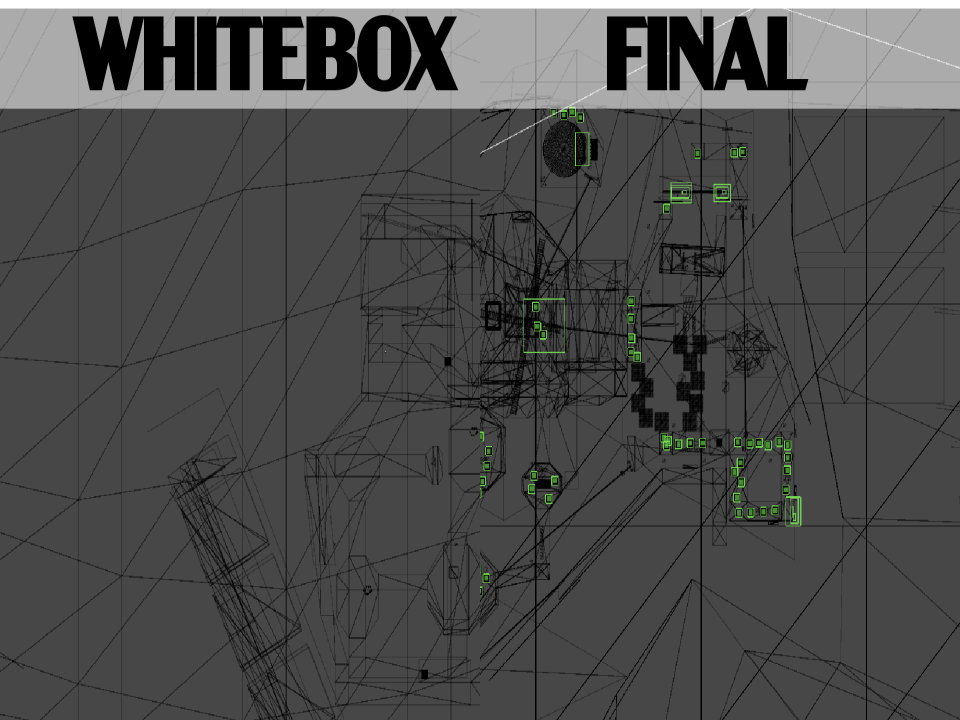
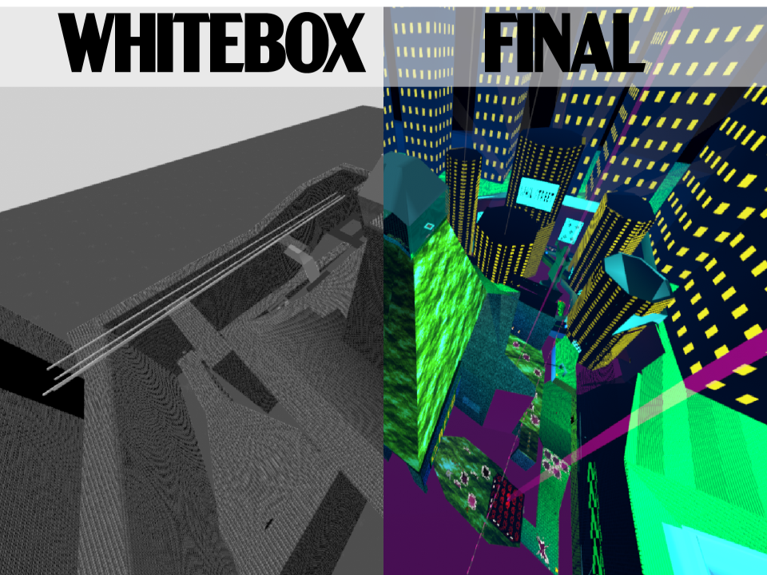
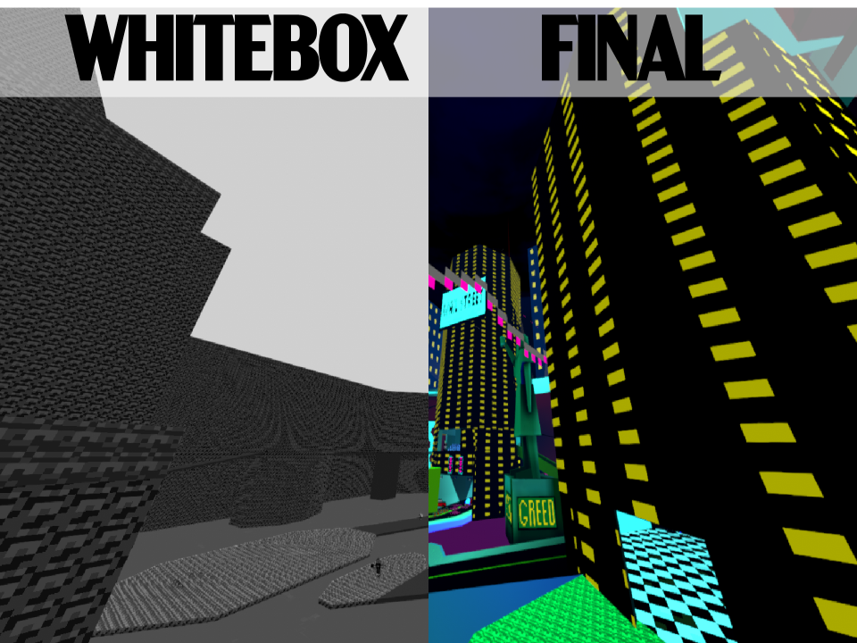

Level Iterations - Circle 4: Greed
Game Introduction:
Each level is an open area with 150 moneybags and 10 Power Shards to collect, along with 1 new ability to buy. You must explore each world to collect enough shards to open the next world.Design Philosophy:
I designed levels with the goal to make each as memorable as possible. Each has slight Metroidvania elements, unlocking a new ability changes the way you traverse them and opens up previously inaccessible areas.Level Introduction:
This level is a pivotal point where players get the glide ability. I built this level with narrow paths, unlocking the ability allows you to glide between them. Here's a breakdown of the evolution throughout development.
Level Blockout
Good: Looping layout Bad: Lacks variationLayout/Traversal:
Based on the Adobe Illustrator sketch. Routes loop to center.Combat Sequences/Objectives:
Narrow paths make on-foot combat difficult, promote flying.Theme/Environment:
Ravine, grassy right area, boardwalk in back.
Vantage Point
Good: Right area setpieces Bad: Back area setpiecesLayout/Traversal:
New vantage point lets players familiarize themselves.Combat Sequences/Objectives:
New difficult fight to vantage point.Theme/Environment:
Slot machine in right area, pachinko in back.
Connecting Areas
Good: New Objectives Bad: Right area color schemeLayout/Traversal:
Gap connecting areas. Fly over to skip backtracking.Combat Sequences/Objectives:
New objectives, like gliding through rings.Theme/Environment:
Fully themed around arcades and casinos.
Center Area
Good: Lighting overhaul Bad: Back area boringLayout/Traversal:
Wall-run takes you from the boss to spawn.Combat Sequences/Objectives:
New area to the left of spawn has its own objective.Theme/Environment:
Center area now mineshaft with shiny gold and blue lighting.
Finishing Touches
Good: New side/back Bad: Didn’t match concept artLayout/Traversal:
Areas modified to test and challenge gliding.Combat Sequences/Objectives:
Buildable zipline shortcuts reward thorough players.Theme/Environment:
Right area has city theme and back has mushroom theme.Conclusion
The iterative process I went through showcases my dedication to making cohesive levels. I had to make sure that the level fulfilled its role in the game, but also exceeded players’ expectations with impressive design and aesthetics.
This method worked well for refining how the player interacted with the level, specifically in rewarding creative use of the glide ability. The downside was the constantly changing visual theme.
This method worked well for refining how the player interacted with the level, specifically in rewarding creative use of the glide ability. The downside was the constantly changing visual theme.